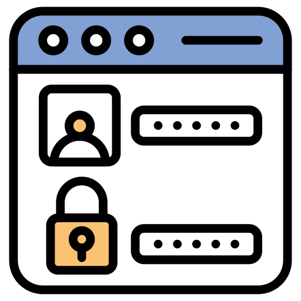
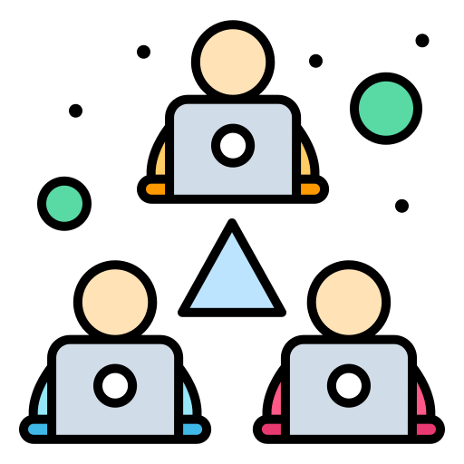
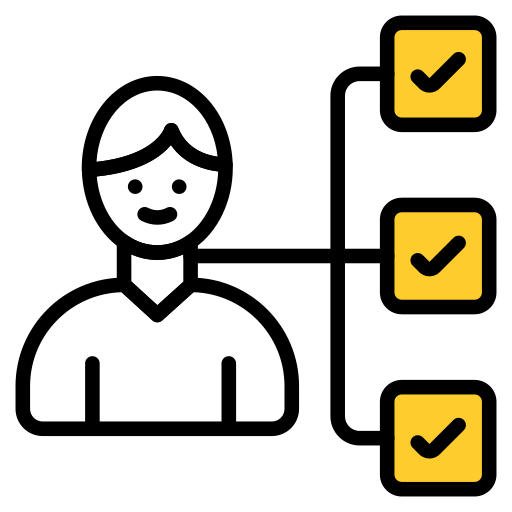
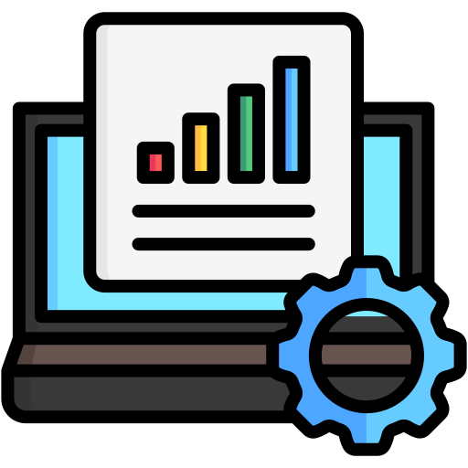
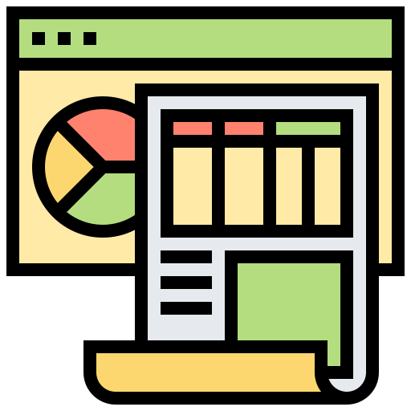
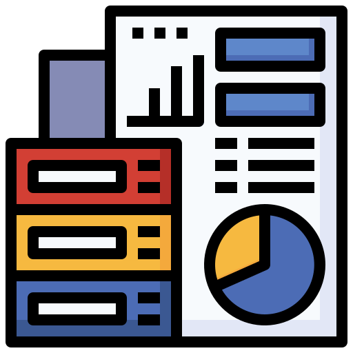
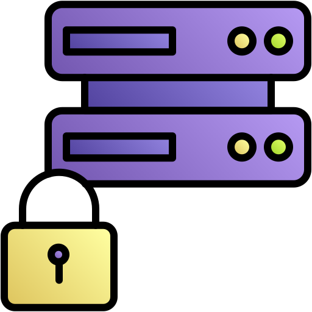
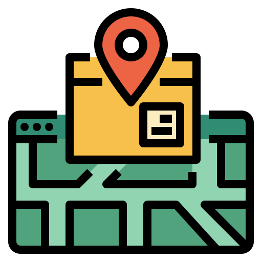
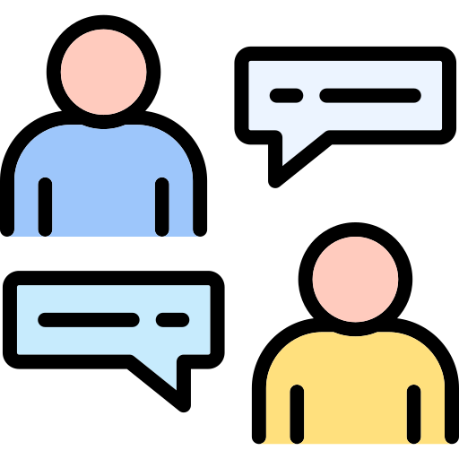

Urban Connect Features
Dynamic Login
Departments, employees, and agencies can log in with role-specific access. This enhances security and ensures that each user sees only the information relevant to them. With customizable roles, permissions can be set at a granular level, providing flexibility to organizations.
Prediction of Co-relating Departments
Advanced AI analyzes data to predict which departments need to collaborate for a given project. By identifying potential overlaps, this feature helps streamline communication, reduce redundant tasks, and save time. It enhances productivity by ensuring resources from different departments work in harmony.
Synchronized Task Scheduling
This feature integrates task management across departments. By offering a drag-and-drop interface, project managers can quickly adjust schedules, allocate resources, and resolve conflicts in real-time. The system ensures that all tasks align with overall project deadlines, preventing bottlenecks.
Unified Project Phasing
Project phasing divides large projects into smaller, manageable phases. With Urban Connect, teams can monitor the progress of each phase individually, while keeping the overall project goals in view. This promotes a structured approach, with deadlines and deliverables for each phase clearly defined.
AI-Driven Dashboard Generation
The AI-powered dashboard provides real-time insights into ongoing projects. With customizable widgets, users can focus on the metrics that matter most, such as resource allocation, project milestones, and key performance indicators (KPIs). This enables data-driven decision-making.
AI-Driven Report Generation
Automatically generate detailed reports based on project data. The AI identifies trends, highlights potential issues, and offers solutions. Reports can be exported in multiple formats, such as PDF and Excel, to share with stakeholders, ensuring transparency and accountability.
Dedicated Resources Database
A comprehensive database for storing details of resources, such as materials, tools, and personnel. It allows for easy tracking of resource availability, helping in procurement, allocation, and avoiding overuse or shortages. This feature integrates seamlessly with scheduling to ensure efficient resource use.
Tracking of Projects and Resources
Track the progress of projects and the utilization of resources in real-time, ensuring accountability. This feature provides visual timelines, Gantt charts, and progress bars to give users an overview of all ongoing tasks. Automated alerts notify project managers when resources are low or deadlines are approaching.
Seminars and Meetings Platform
Organize and manage seminars and meetings efficiently with this feature. It includes scheduling, invitations, reminders, and even video conferencing integration. This ensures that all team members are aligned, and meetings happen on time with clear agendas.
Public Complaints Collection
Collect public complaints and feedback seamlessly. This feature enables users to submit complaints, track their status, and receive updates, enhancing transparency and responsiveness. It integrates with the system's task management to ensure that complaints are assigned to the right departments for quick resolution.
Discussion Forum
Encourage open discussions with a built-in forum where users can share ideas, ask questions, and collaborate on solutions for urban issues. Moderators can guide discussions, ensuring that conversations remain constructive and focused on actionable solutions.
